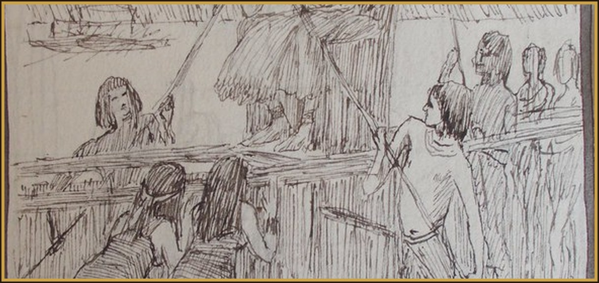

Intention the favor I place in your hands
1These are the names of the sons of Israel, who went into Egypt with Jacob. They entered, each one with his house: 2Reuben, Simeon, Levi, Judah, 3Issachar, Zebulun, and Benjamin, 4Dan and Naphtali, Gad and Asher. 5Therefore, all the souls of those who went forth from Jacob’s thigh were seventy. Now Joseph was in Egypt. 6When he had died, along with all of his brothers and all of that generation, 7the sons of Israel increased, and they multiplied like seedlings. And having been strengthened exceedingly, they filled the land. 8Meanwhile, there arose a new king over Egypt, who was ignorant of Joseph. 9And he said to his people: “Behold, the people of the sons of Israel are many, and they are stronger than we are. 10Come, let us wisely oppress them, lest they multiply; and if any war should advance against us, they may be added to our enemies, and having fought against us, they might depart from the land.” 11And so he set over them masters of the works, in order to afflict them with burdens. And they built for Pharaoh the cities of the tabernacles: Pithom and Raamses. 12And the more they oppressed them, so much more did they multiply and increase. 13And the Egyptians hated the sons of Israel, and they afflicted them and mocked them. 14And they led their life directly into bitterness, with hard work in clay and brick, and with all kinds of servitude, so that they were being overwhelmed with the works of the land. 15Then the king of Egypt spoke to the midwives of the Hebrews, (one of whom one was called Shiphrah, another Puah) 16instructing them: “When you will act as a midwife to the Hebrew women, and the time of delivery has arrived: if it is male, put it to death; if it is female, retain it.” 17But the midwives feared God, and so they did not act according to the precept of the king of Egypt, but they kept the males safe. 18And summoning them, the king said, “What did you intend to do, so that you would save the boys?” 19They responded: “The Hebrew women are not like the Egyptian women. For they themselves have the wisdom of a midwife, and so they give birth before we can come to them.” 20Therefore, God acted favorably toward the midwives. And the people increased, and they were strengthened exceedingly. 21And because the midwives feared God, he built houses for them.

- Pharaoh and the midwives (Exodus 1 15) — James Tissot (c. 1896–1902) · Public domain · source
_for_Brunoff_095_Pharaon_et_les_sages-femmes.jpg){kind=link}
22Therefore, Pharaoh instructed all his people, saying: “Whatever will be born of the male sex, cast it into the river; whatever will be born of the female sex, retain it.”
A new king rises who is ignorant of Joseph. The household that was welcomed is feared, and fear becomes policy: hard labor, then an order to the midwives to kill the sons. Shiphrah and Puah fear God, and they do not act according to the king’s precept. The chapter does not end in rescue. Pharaoh tells his people to cast every boy into the river. Sometimes the first act of faith is a refusal, not a victory.
- Whose order have you been treating as the only one that counts?
- What small refusal, already clear, would fear of God ask of you this week?
The First Joyful Mystery - The Annunciation
Fruit: Humility · Luke 1:26
Sweet Mother Mary,
meditating on the Mystery of the Annunciation, when the angel Gabriel appeared to you with the news that you were to become the Mother of God. He greeted you with that sublime salutation, “Hail, full of grace! The Lord is with thee!” and you did humbly submit yourself to the will of the Father, responding: “Behold the handmaid of the Lord. Be it done unto me according to thy word,”
The Second Joyful Mystery - The Visitation
Fruit: Charity Towards My Neighbor · Luke 1:39
Sweet Mother Mary,
meditating on the Mystery of the Visitation, when, upon your visit to your holy cousin, Elizabeth, she greeted you with the prophetic utterance, “Blessed art thou among women, and blessed is the fruit of thy womb!” and you answered with that canticle of canticles, the Magnificat,
The Third Joyful Mystery - The Nativity
Fruit: Detachment From The World · Luke 2:1
Sweet Mother Mary,
meditating on the Mystery of the Nativity of Our Lord, when, your time being completed, you brought forth, O holy Virgin, the redeemer of the world in a stable at Bethlehem; whereupon choirs of angels filled the Heavens with their exultant song of praise – “Glory to God in the highest, and on Earth peace to people of good will,”
The Fourth Joyful Mystery - The Presentation
Fruit: Purity · Luke 2:22
Sweet Mother Mary,
meditating on the Mystery of the Presentation, when, in obedience to the Law of Moses, you presented the Child in the temple, where the holy prophet Simeon, taking the Child in his arms, offered thanks to God for allowing him to look upon his Saviour,
The Fifth Joyful Mystery - The Finding of the Child Jesus in the Temple
Fruit: True Wisdom · Luke 2:41
Sweet Mother Mary,
meditating on the Mystery of the Finding of the Child Jesus in the Temple, when, having sought Him for three days, distressed and anxious at His absence, your heart was gladdened when you found Him in the temple speaking to the doctors; and upon your request, He obediently returned home,
The Thanksgiving Prayer
Hail! Queen of the Most Holy Rosary, my Mother Mary, hail! At your feet I humbly pray and offer you a crown of snow-white roses, to remind you of your joys. Each ten bound together, recalling to you a joyful mystery, with my petition for a particular grace. O Holy Queen, dispenser of God’s graces and mother of all who invoke your holy name. Do not look upon my gift and fail to see its binding. As you graciously receive my gift, I kindly implore you to receive my thanksgiving; from your bounty you have granted me the favor I so trustingly sought. I despaired not of what I ask of thee, and thou has truly shown thyself my Mother!
Prayer in Thanksgiving
Sweet Mother Mary, I offer you this Spiritual Communion to bind my bouquets in a wreath to place upon your brow in thanksgiving for the favor I place in your hands.
Day 1
Why do you confuse yourselves by worrying? Leave the care of your affairs to me and everything will be peaceful. I say to you in truth that every act of true, blind, complete surrender to me produces the effect that you desire and resolves all difficult situations.
Ten times
O Jesus, I surrender myself to you, take care of everything!
To Our Lady
Mother, I am yours now and forever. Through you and with you I always want to belong completely to Jesus.